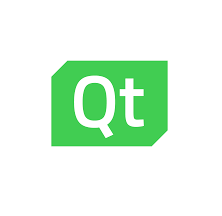
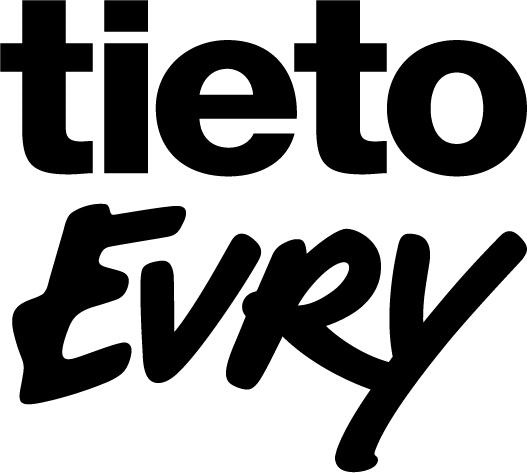
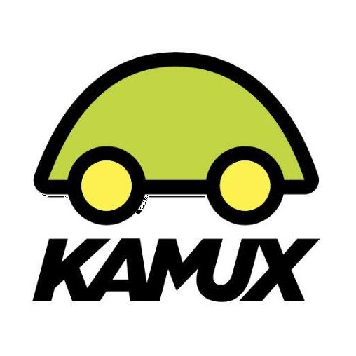

#1 Qt Group
Päätöskurssi 26.11: 129.80€
#2 Harvia
Päätöskurssi 26.11: 52.80€
#3 Remedy
Päätöskurssi 26.11: 37.60€
#4 TietoEVRY
Päätöskurssi 26.11: 25.72€
#5 Kamux
Päätöskurssi 26.11: 11.21€
Lyhyet analyysit (tai ennemmin ajatuksia) yhtiöiden tulevaisuuden näkymistä
#1 Qt Group
Qt Group on nähnyt valtavaa kasvua kvartaalista kvartaaliin ja on pystynyt pitämään nykyisen arvostustason huikean kasvunsa ansiosta. Oletettavasti kasvu tulee jatkumaan lähes samanlaisena myös lähi tulevaisuudessa että keskipitkällä aikavälillä. Qt:ta käytetään yhä laajemmin maailmalla ja on mahdollisesti luomassa mm. auto alalle uutta standardia laatunsa puolesta.
#2 Harvia
Harvia vaikutti ensi silmäyksellä tylsältä osingon maksu yhtiöltä. Toisin kuitenkin kävi johdon löytäessä jatkuvasti tapoja kasvaa orgaanisesti sekä epäorgaanisesti yritysostoin. Kotoilun trendi on satanut selvästi Harvian laariin suomalaisten päivittäessä saunojaan. Epäilijöitä löytyy edelleen, ketkä ovat sitä mieltä että pandemian väistyessä saunoja ja kaikkea sanaan liittyvää ei enää ostettaisi ja/tai kulutettaisi mutta näen uudenlaisen terveystrendin saunan ympärillä ja se on yksi syy yhtiön valoisaan tulevaisuuteen. Vaikuttava kasvu, vakaa kassavirta sekä hyvät tulevaisuuden näkymät pandemiasta huolimatta takaavata Harvian arvon luontia myös osakkeen omistajille. Näen että Harvialla on potentiaalia kasvaa maailman suurimmaksi sauna&spa yhtiöksi.
#3 Remedy
Lyhyellä välillä videopelit tulevat kantamaan hedelmää Remedyn yhä luodessa uusia AAA pelejä markkinoille. Pandemian aikainen kotoilu trendi on myös tuonut mahdollisesti uusia pelaajia Remedyn pelien pariin. On tietysti mahdollista että Remedy ostetaan isomman toimijan puolesta pois markkinoilta mutta se lisää vain entisestään mahdollista nousuvaraa kurssissa. Remedy on myös juuri laajentanut Tukholmaan luoden yhden lisä kehityshubin saaden uusia senioritason devaajia riveihinsä Ruotsin puolella.
#4 TietoEVRY
Yksi tylsimmistä yhtiöistä joita olen seurannut. Uskon aliarvostuksen purkautuvan lähiaikoina ja se voi näkyä myös siten, että markkinoiden tullessa terveemmälle tasolle TietoEVRY säilyttää nykyisen arvostuksena.
#5 Kamux
Lyhyen aikavälin näkymät eivät ole loistavat, mutta riskejä minimoimalla voi Kamux yllättää positiivisesti sijoittajan. Mikäli sähköautojen toimittajia löytyy lisää nopeasti, voisi se olla yksi suuri positiivinen ajuri Kamuxin lyhyen, keskipitkän sekä pitkän aikavälin kehitykselle. Mutkia on ollut matkassa ja monttuihin on ajettu mutta negatiivisen kierteen katketessä voimme nähdä nopeasti nousevan kurssikäyrän.